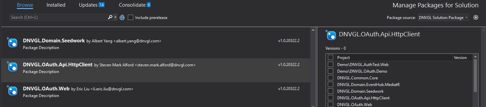

Overview
DNVGL.OAuth.Api.HttpClient package has two type credentials. One is user credentials which use current user's credentials to access api. Other is client credentials which is a service to service model to access api. The http client will integrate the credentials to access web api.
Package Install
To install DNVGL.OAuth.Api.HttpClient package, you may need to add the below package feed to your nuget sources.
https://dnvgl-one.pkgs.visualstudio.com/_packaging/DNVGL.SolutionPackage/nuget/v3/index.json
Package Manager Console
PM> `Install-Package DNVGL.OAuth.Api.HttpClient`
Or Package Manager for solution/project 
Basic example
- Setup API http client configuration in
appsettings.jsonfile.
{
"ApiHttpClientOptions":[
{
"Name": "userCredentialsClient",
"Flow":"user-credentials",
"BaseUri": "https://localhost/api/user",
"SubscriptionKey": "eqrqie3431qre234"
},
{
"Name": "clientCredentialsClient",
"Flow":"client-credentials",
"BaseUri": "https://localhost/api/client",
"SubscriptionKey": "eqrqisfs34s1qre734"
"OpenIdConnectOptions": {
"TenantId": "ed815121-cdfa-4097-b524-e2b23cd36eb6",
"ClientId": "35807f23-80d5-4e97-b07a-21b86013a9ff",
"ClientSecret": "44adfa232#1ad6@#",
"Scopes": [ "https://dnvglb2ctest.onmicrosoft.com/a4a8e726-c1cc-407c-83a0-4ce37f1ce130/user_impersonation", "offline_access" ],
"SignInPolicy": "B2C_1A_SignInWithADFSIdp"
}
}
]
}
- Calling
AddOAuthHttpClientFactoryextension to register api client toServiceCollection
If you want to create user credential HttpClient, you must add AddOidc extension method and token cache to ConfigureSerices too. The Oidc configuraton is used by user credntial. Please refer details to DNVGL.OAuth.Web.
If you want to create client credential HttpClient, you have to set up OpenIdConnectOptions, Please see above setup API http client configuration.
public void ConfigureService(IServiceCollection services)
{
...
services.AddOAuthHttpClientFactory(Congiuration.GetSection("ApiHttpClientOptions").Get<IEnumerable<OAuthHttpClientFactoryOptions>>());
...
}
- Resolve
OAuthHttpClientFactoryto create user-credential or client-credentialHttpClientto access web api.
public class TestController
{
private readonly IOAuthHttpClientFactory _oauthHttpClientFactory;
public TestController(IOAuthHttpClientFactory httpClientFactory)
{
_oauthHttpClientFactory = httpClientFactory;
}
public User GetUser(string id)
{
var client = _oauthHttpClientFactory.Create('userCredentialsClient');
...
}
public Company GetCompany(string id)
{
var client = _oauthHttpClientFactory.Create('clientCredentialsClient');
...
}
}